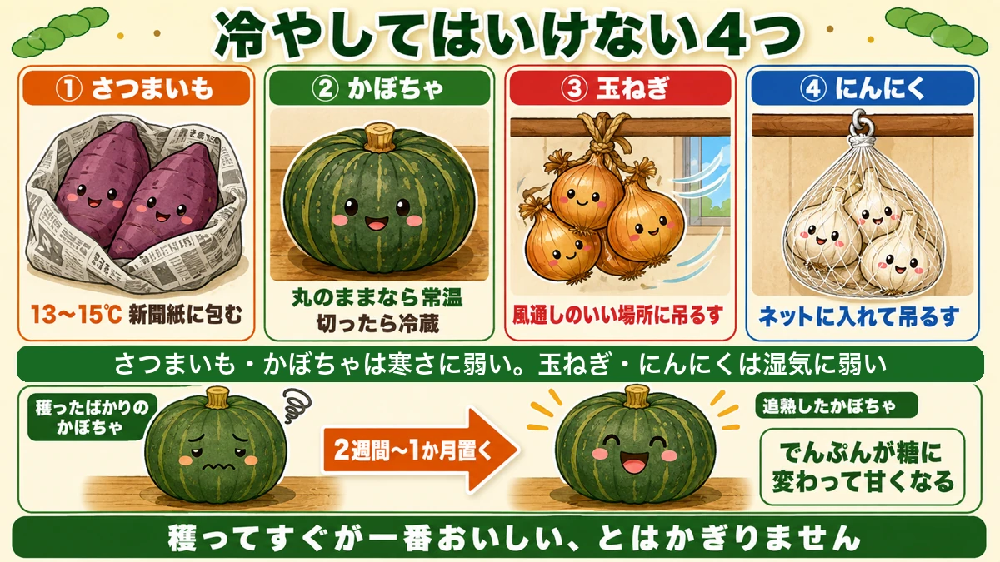
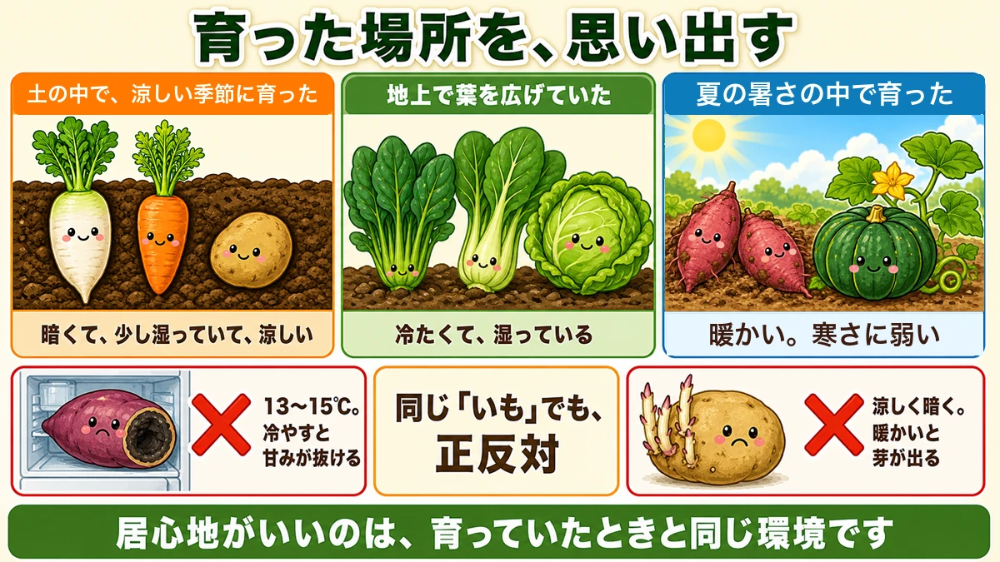
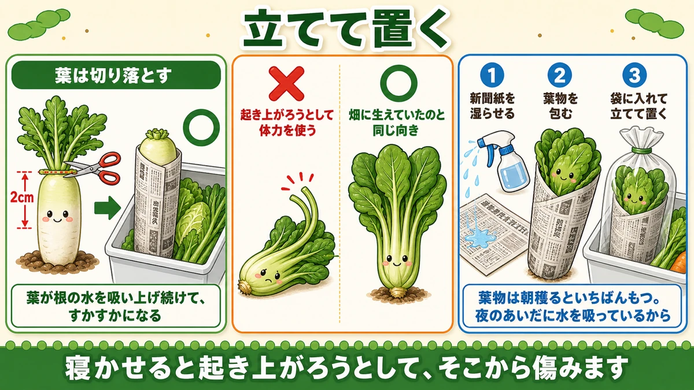

野菜の保存方法まとめ｜温度で3つに分ける・冷蔵庫NGの野菜・土に埋める保存
どうも、8150（えいこう）です🌱 家庭菜園歴8年、理科の教員免許を持っていて、有機・無農薬で野菜を育てています。
📖 この記事の目次
この記事で分かること
- 野菜の保存は「どのくらいの温度が合うか」で、大きく3つに分けると覚えやすくなります。
- さつまいも・生姜は13℃前後の暖かめ、里芋とかぼちゃは中くらい、大根や人参は低めが合います。
- さつまいも・生姜・里芋は、寒さに弱い野菜です。冷蔵庫に入れると、かえって傷みやすくなります。
- 大根・人参・ネギは、畑の土の中に埋めて保存する方法があります。
- 玉ねぎ・にんにくは、まず乾かすこと。ビニール袋に入れっぱなしにすると蒸れて腐ります。
- どの野菜も、傷・虫食い・折れたものは保存用に混ぜないのが基本です。
家庭菜園をしていると、ある日いっせいに穫れすぎて「これ、どうしよう…」となりませんか。
さつまいもを段ボールいっぱい掘ったのに、春を待たずにほとんど腐らせてしまった。大根を冷蔵庫に入れたら、すぐしなびてしまった。保存って、地味だけど失敗するとほんまに悲しいんですよね💦
でも安心してください。野菜にはそれぞれ「ちょうどいい温度」があって、そこさえ押さえれば、ぐっと長持ちさせられます。この記事では、野菜ごとの保存方法を、理由と一緒にまとめました。
早見：野菜ごとの保存温度と、冷蔵庫に入れてよいか
温度で3つに分ける
ここに並べた温度は、それぞれの野菜について語られている目安を並べたものです。同じ野菜でも説明によって幅があるので、「このくらいが合う」という目安として見てください。
低めが合う野菜
- 大根：0〜5℃くらい。乾燥させないことが大事。
- 人参（冬）：冷蔵庫や、乾燥を防ぐ袋で保存。
- じゃがいも：食べる芋と、種にする芋で保存の仕方が変わります（あとでくわしく）。
中くらいが合う野菜
- 里芋：7〜10℃くらい（湿度85〜90%）。説明によっては6〜8℃という値もあります。
- かぼちゃ：10〜15℃くらい。雨の当たらない、涼しい日陰。
暖かめが合う野菜
- さつまいも：13〜16℃くらい（湿度90〜95%）。
- 生姜：13〜16℃くらい（湿度90%以上）。
冷蔵庫に入れてよいか

入れないほうがいいもの
- さつまいも：冷蔵庫は寒すぎて、傷みやすくなります。
- 生姜、里芋：寒さに弱い野菜です。長く置きたいなら、冷蔵庫以外の暖かめの場所へ。
少量なら冷蔵庫でもよいもの
- 大根：少しなら野菜室で。
- 人参：冷蔵庫で保存する方法があります。
- にんにく：1個ずつ新聞紙で包んで冷蔵、または1片ずつ分けて冷凍する方法があります。
- 白菜：小さくなってきたら、ラップで包んで冷蔵庫へ。
季節ごとに、保存の出番が来る野菜
- 初夏（5〜7月）：玉ねぎ、にんにく、春に育てたじゃがいも。まず乾かすのが勝負です。
- 秋（9〜11月）：さつまいも、里芋、生姜、かぼちゃ。寒さに弱いものが多いので、冬に向けて置き場所を考えます。
- 冬（12〜2月）：大根、人参、白菜、ネギ、秋に育てたじゃがいも。寒さに強いので、畑や土の中を冷蔵庫がわりに使えます。
収穫の時期に合わせて、「次はどの野菜の保存の準備が要るか」を先に知っておくと、段ボールやもみ殻を慌てて探さなくてすみますよ。
この早見の使い方
数字がたくさん並ぶと、なんか急に身構えますよね。でも、家で温度計を見ながらきっちり管理する必要はありません。
大事なのは、「この野菜は寒いのが苦手か、平気か」を知っておくことです。
寒さが苦手な野菜（さつまいも・生姜・里芋）は、冬は家の中のなるべく暖かい場所へ。寒さに平気な野菜（大根・人参）は、涼しい場所や土の中へ。この分け方さえ覚えておけば、大きな失敗はかなり減らせますよ☺️
作業の手順（保存する前〜野菜ごとの保存）
1. 保存する前に、まず「仕分け」をする

どの野菜にも共通する、いちばん大事なひと手間です。
保存に回さないもの
- 傷がついているもの
- 虫に食われているもの
- さわると柔らかいもの
- 掘るときに折れてしまったもの
- すでに腐りかけているもの
これらは長くもたないうえに、そこから腐りが広がって、まわりの元気な野菜までだめにしてしまうことがあります。保存用とは分けて、早めに食べてしまいましょう。
保存を始めてからも、ときどき中を見て、腐ってきたものがあればすぐ取りのぞきます。1個の傷みが、箱全体に広がるのを防ぐためです。
保存を始める前に、こんなことを確かめておくと安心です。
- 傷・虫食い・柔らかいもの・折れたものを分けた
- この野菜は「洗わない」のか「乾かす」のかを確かめた
- 寒さに弱い野菜か、平気な野菜かを確かめた
- 置き場所の温度（暖房の近くや、冷えこむ玄関ではないか）を確かめた
- 袋や箱を密閉していない
2. 土をどこまで落とすか、乾かすかを決める
ここは野菜によって、まったく逆になります。
- さつまいも：土つきのまま。洗わない（洗うと皮に小さな傷がつきます）。掘ったら日陰で1日ほど乾かす説明があります。
- 生姜：乾かさず、湿った土を少し残したまま。乾燥にとても弱いからです。
- 里芋：土は落としすぎず、軽く払う程度。泥がひどいときだけ少し乾かします。
- 玉ねぎ、にんにく：しっかり乾かす。
- 大根、人参：葉を切って、乾燥させないように保存します。
「全部の野菜を洗ってきれいにしてから保存」とやってしまうと、かえって傷みやすくなる野菜があるので気をつけてください。
3. 大根の保存
大根は、低めの温度で、乾燥させないことがポイントです。
少量なら：冷蔵庫の野菜室へ。
たくさん穫れたら、米袋と段ボールを組み合わせる方法があります。
- 葉を切る
- お米の入っていた袋に大根を入れる（袋から出てしまうときは、もう1枚上からかぶせる）
- 袋ごと段ボールに入れて、ふたをする
- 涼しい場所に置く
米袋は口を縛れるので、乾燥を防げるのがいいところです。
畑の土に埋めて保存する方法もあります（あとの「土の中で保存する」で説明します）。
4. 人参の保存
冬の人参も、乾燥に弱い野菜です。
- 少量なら冷蔵庫へ。
- 多いときは、米袋に横に寝かせて入れ、口を縛る。
- 段ボールなら、新聞紙を上からかけてから、ふたをする。
- 袋や段ボールは、涼しい場所に置く。
人参も、畑で土をかけたまま保存する方法があります。
5. 白菜の保存

白菜は、畑で立った姿で育っています。だから保存するときも、立てて置くのがポイントです。
家の中で保存するとき
- 新聞紙で包む
- 立てて置く（寝かせない）
- 直射日光の当たらない場所に置く
- 暖房の熱風が当たらない場所を選ぶ
冬は寒さだけでなく、エアコンやヒーターの暖かい風も白菜には良くありません。暖房の近くは避けてください。
食べるときは、包丁で半分に切るより、外側の葉から1枚ずつはがして使うと長持ちします。切り口から傷んでいくからです。だんだん小さくなってきたら、ラップで包んで冷蔵庫へ移します。
この方法で、2〜3週間、条件がよければ1か月ほどもたせた例があります。
畑に置いたまま冬を越させるなら、外側の葉を持ち上げて、ひもで縛っておく方法もあります。外側の大きな葉を下から順に持ち上げて、玉をくるむように頭の上でまとめ、ひもで軽く縛ります。外葉が布団のようになって、中の玉を寒さから守ってくれるんです。縛る時期は、説明が分かれています（あとの章で）。
6. 玉ねぎ・にんにくの保存
玉ねぎとにんにくは、「しっかり乾かす」がすべての始まりです。
収穫する前から気をつけたいこと
- 収穫が近づいたら、追肥や水やりを控える。直前まで肥料や水が効いていると、保存性が悪くなるという説明があります。
収穫したら
- 畑でそのまま乾かす。少なくとも、ぬれた土が手で払い落とせるくらいまで。
- 雨の当たらない軒下などに吊るして、さらに乾かす。
- 乾いたら、吊るしたまま、または風通しのよいネットや箱で保存する。
ぜったいにやってはいけないのが、ビニール袋に入れたまま置いておくことです。玉ねぎもにんにくも、収穫したあとも呼吸を続けています。袋の中が湿気でいっぱいになって、カビが生え、腐ってしまいます。
にんにくを長く置きたいとき
- 冷蔵：軸を短く切って、1個ずつ新聞紙で包み、冷蔵庫へ。1〜2か月ほど。
- 冷凍：1片ずつに分けて、密閉できる袋へ。3か月〜半年ほど。
7. じゃがいもの保存
じゃがいもは、「食べる芋」と「種にする芋」を分けて考えます。ここ、混ざりやすいので気をつけてください。
食べる芋
- 秋に育てたじゃがいもは、葉や茎が枯れたあと、掘らずに土をかけて畑で保存する方法があります。
- 家の中で保存するなら、乾かしてから袋や箱へ。ときどき、芽が出ていないか、腐ったものがないかを見ます。
種にする芋
- 新聞紙で包んで冷蔵庫の冷蔵室に入れる、という方法を紹介している説明があります。じゃがいもは湿気に弱いので、新聞紙で湿気から守る、という考え方です。
- ただし、これは「春に植えるまで、芽を出させずに置いておく」ための方法です。食べる芋の保存にそのまま当てはめないでください。
春に育てたじゃがいもは、収穫が暑い時期になるので、秋のように畑に置いておく方法は向きません。
8. さつまいもの保存
さつまいもは、保存でいちばん失敗しやすい野菜かもしれません。理由は、寒さにも乾燥にも弱いからです。
保存の手順
- 掘ったら、土つきのまま日陰で乾かす。
- 傷・虫食い・柔らかいものを取りのぞく。
- 段ボールか発泡スチロールの箱に、新聞紙を敷く。
- 芋を並べる。もみ殻があれば、芋のあいだを埋めるとなおよい。
- 箱のふたは、ぴったり閉めない。軽くのせるか、新聞紙をかける程度に。
- 家の中の、温度があまり下がらない場所に置く。
ふたを閉めないのは、さつまいもが掘ったあとも呼吸をしているからです。密閉すると、蒸れて腐ってしまいます。
置き場所は、こんなところに気をつけてください。
- 玄関：冬は冷えこみやすいので要注意。
- 暖房の近く：暖かすぎると芽が出てきます。
- 冷蔵庫：寒すぎるので入れない。
乾燥しすぎるのも良くありません。芋の両はしがしわしわになって、そこから腐ってくることがあります。
9. 里芋の保存
里芋は、寒さと乾燥に弱い野菜です。
家の中で保存する手順
- 親芋と子芋を、ばらさずにそのまま保存する（ばらさないほうがうまくいきます）。
- 根を切り、土は軽く落とす程度に。落としすぎない。
- 段ボールに新聞紙を敷き、もみ殻を少し入れる。
- 茎を切った切り口を下にして（上下さかさまにして）入れる。
- 上からもみ殻をかけ、新聞紙をかぶせて、ふたをする。
- 家の中の、温度の安定した場所に置く。
もみ殻が手に入らないときは、新聞紙で包んだり、上から新聞紙をかけたりする方法もあります。新聞紙は、余分な湿気を吸ってカビを防ぎながら、乾燥も防いでくれます。
10. 生姜の保存
生姜は、さつまいもと同じく13〜16℃くらいの暖かめが合う、寒さと乾燥に弱い野菜です。
保存の手順
- 掘ったら、あえて乾かさない。湿った土を少し残したままにする。
- ビニール袋に入れて、口はぎゅっと縛らず、ゆるく閉じる。
- 家の中の、暑すぎず寒すぎない場所に置く。
- 寒い家や地域なら、さらに発泡スチロールの箱に入れる。
- ときどき見て、乾いているようなら霧吹きで少し湿らせる。
袋をゆるく閉じるのは、密閉すると呼吸ができなくなるからです。
暖かくなってくると、芽が出てくることがあります。春先は、ときどき様子を見てあげてください。
この方法は、来年植える種生姜だけでなく、食べる生姜の保存にもそのまま使えます。生姜を作っている農家では、穴を掘って土の中で保存することもありますが、家庭で使うくらいの量なら、袋と箱で十分です。
ひとつ気をつけたいのが、生姜と、玉ねぎ・にんにくは、袋の使い方が正反対だということです。生姜は乾燥を防ぐために袋に入れ、玉ねぎ・にんにくは蒸れを防ぐために袋に入れない。どちらも「袋」なのに目的が逆なので、まちがえないようにしてくださいね。
11. かぼちゃの保存
かぼちゃは10〜15℃くらいの、涼しい場所が合います。
- 雨の当たらない、涼しい日陰に置く。
- 収穫したあと、しばらく置いてから食べると甘みがのってきます。
- 家庭で少量なら、外より家の中の涼しい場所のほうが温度を保ちやすい。
- できるだけ重ねない。重ねると、重みで傷がつき、腐りやすくなります。
暖かい場所に置くと、甘みは増しますが、ほくほく感がへって、腐りやすくなります。夏から秋の収穫だと、15℃以下の場所を見つけるのが大変なので、なるべく涼しいところを探してあげてください。
12. 土の中で保存する（大根・人参・ネギ・里芋）
畑がある人にぜひ試してほしいのが、土の中での保存です。土の中は温度の変化が少なく、湿り気も保たれるので、野菜にとって居心地のいい場所なんです。
大根・人参：掘って埋める方法
- 掘り上げて、葉を切る（成長を止めるため）
- 深さ10〜20cmほどの穴を掘る
- 大根は長いので、斜めに寝かせて埋める
- 土を多めにかける
土が少ないと、寒さや霜で凍ってしまうことがあります。しっかり多めにかけてください。
大根：抜かずに、寒さから守る方法
- 暖かい地域なら、抜かずに株元に土を寄せておく方法があります。
- 寒い地域なら、収穫して、水はけのよい場所に並べ、上から土をかけます。
- 並べるときは、大根どうしがくっつかないように少しすき間をあける。
- 葉を5cmほど残しておくと、掘り出すときの目印になります。
- かける土は5〜10cmほど。寒い地域ほど多めに。
- 少し傾斜をつけて、雨水がたまらないようにする。
ネギ：斜めに植えておく方法
- 深さ10〜20cm、幅30〜50cmほどの溝を掘る
- ネギを斜めに寝かせて置く
- 青い部分が少し出るように、土をかける
ネギは、青い部分が少し外に出ていたほうが新鮮さを保てます。大根や人参のように葉を切ってしまわないのがポイントです。
掘るときに、コガネムシやヨトウムシの幼虫がいたら取りのぞいてください。土の中でネギを食べてしまうことがあります。
里芋：畑で冬を越させる方法
- 寒さが厳しくない地域なら、茎を切って株元に土をかけておく方法があります。
- 掘り上げて、穴に埋め直す方法もあります。芋を親子でばらさずに逆さにして入れ、もみ殻などを敷いて土をかけ、上を小山にして雨よけのシートをかけます。
- 寒い地域や、春の種芋にしたいものは、家の中で保存するほうが安心です。
暖かい地域では、掘らずに畑に植えたままにしておいた里芋が、そのまま冬を越して春に芽を出した、という話もあります。ただ、これはその年の冷えこみ次第の「いちかばちか」の方法です。どの地域でも畑に置いたまま冬を越せる、というわけではないので、大事な芋は家の中に取っておくと安心です。
さつまいもも、本格的には、70〜80cmほどの深い穴を掘って、わらやもみ殻と芋を交互に重ねて保存する方法があります。ただ、雨水が入ったり深さが足りなかったりすると失敗しやすく、家庭ではむずかしい方法です。さつまいもは、まず家の中の箱での保存から始めるのがおすすめです。
13. 干して保存する（大根）
大根は、干して保存する方法もあります。
- 細長く切ったり、割いたりして、日に当てて干す。
- 1週間ほど干すと、甘みが出て、漬物の材料などに使える干し大根になります。
- ベランダでもできますし、スーパーで買った大根でも作れます。
干すときは、雨に当てないように気をつけてください。
失敗の見分け方（症状→原因→やること）
さつまいもが、黒っぽく変色したり腐ったりした
- 症状：芋の色が変わる。柔らかくなる。いやな匂いがする。
- 考えられる原因：寒すぎる場所に置いていた（冷蔵庫、冬の玄関など）。傷のある芋が混ざっていた。洗ってから保存した。
- やること：腐ったものはすぐに取りのぞきます。残りは、家の中のもう少し暖かい場所へ移します。
さつまいもや生姜から、芽が出てきた
- 症状：芋の表面から芽が伸びてくる。
- 考えられる原因：置き場所が暖かすぎる（暖房の近くなど）。春になって気温が上がった。
- やること：少し涼しい場所へ移します。芽が出たさつまいもは、早めに食べてしまいましょう。
芋がしわしわになった
- 症状：さつまいもの両はしや、生姜、里芋がしなびてくる。
- 考えられる原因：乾燥しすぎている。
- やること：新聞紙で包む、もみ殻に埋める、生姜なら霧吹きで少し湿らせる、など乾燥を防ぎます。
カビが生えた、蒸れた匂いがする
- 症状：表面に白や緑のカビ。むっとした匂い。
- 考えられる原因：湿気がこもっている。ビニール袋や箱を密閉している。泥がドロドロのまま保存した。
- やること：カビたものは取りのぞきます。袋や箱のふたを少しあけて、風を通します。泥がひどい里芋は、少し乾かしてから保存し直します。
玉ねぎ・にんにくが腐ってきた
- 症状：やわらかくなる。中から腐る。カビが生える。
- 考えられる原因：乾かしきらずに保存した。ビニール袋に入れていた。収穫の直前まで肥料や水が効いていた。
- やること：腐ったものはすぐに取りのぞきます。残りは、風通しのよい場所に吊るし直します。来年は、収穫前に追肥と水やりを控えます。
土に埋めた大根や人参が凍っていた
- 症状：掘り出したら、凍っていたり、ぶよぶよになっていたりする。
- 考えられる原因：かけた土が少なかった。
- やること：残りの分は、土を多めにかけ足します。寒い地域では、最初から多めにかけておきます。
土に埋めた野菜が腐っていた
- 症状：掘り出したら腐っていた。
- 考えられる原因：雨水が入って、水がたまっていた。穴が浅かった。上に土を盛っていなかった。
- やること：次からは、水はけのよい場所を選び、傾斜をつけ、上を小山にして雨よけをかけます。
さつまいもの土中保存は、とくにむずかしい方法です。水が入ったり、深さが足りなかったりすると失敗しやすく、「土の中で保存するなら、年内か1月までに食べ切るほうがいい」という考え方もあります。
かぼちゃが早く傷んだ
- 症状：へたのまわりや、重ねた面から傷んでくる。
- 考えられる原因：重ねて置いていた。暖かすぎる場所に置いていた。雨に当たった。
- やること：重ねずに並べ、涼しい日陰に移します。
説明が分かれていること
さつまいもは、何℃まで下がると傷むか
- 10℃以下で傷みやすいという説明
- 9℃以下で変色したり腐ったりしやすいという説明
- 5℃以下にならなければ冬を越せるという説明
- どう考えればよいか：家の温度、箱、詰めるもの、保存前の処理によって変わるので、ひとつの数字では決められません。「10℃を下回りそうな場所は避ける」くらいに考えておくと安全です。5℃でも大丈夫という説明は、条件がそろった場合の話と考えてください。
さつまいもは、何℃から芽が出るか
- 16℃以上で芽が出るという説明
- 17〜18℃以上で芽が出るという説明
- どう考えればよいか：どちらも「暖かすぎると芽が出る」という点は同じです。暖房の近くなど、暖かくなりすぎる場所を避ければ十分です。
さつまいもを洗ってから保存してよいか
- 洗わないのが鉄則という説明：洗うと皮に小さな傷がつき、そこから菌が入って腐る。食べる前に洗えばいい。
- 洗ってもよく乾かせば保存できたという説明：ただし、家の中が冷えこみすぎないなどの条件つきで、「個人的な感想」として語られています。
- どう考えればよいか：初めての方は、洗わずに土つきのまま保存するのが無難です。
さつまいもの箱に、空気穴をあけるか
- 箱に切れこみを入れて、外の空気と通じる道を作るという説明
- ふたを軽くのせて密閉しなければ、穴まであけなくてよいという説明
- 穴はあけず、ふたもせずに新聞紙をかけるという説明
- どう考えればよいか：共通しているのは「密閉しない」ことです。どの方法でも、ぴったり閉じなければ大丈夫です。
里芋は、何℃で保存するか
- 7〜10℃という説明（湿度85〜90%）
- 6〜8℃という説明
- 13℃前後という説明（単位が聞き取りにくい部分があり、確かではありません）
- どう考えればよいか：数字にはばらつきがありますが、「寒さに弱いので、冷えこむ場所を避ける」という方向は同じです。
里芋は、どこまで乾かすか
- 3日ほど天日で、からからに乾かすという説明（種芋づくりの場合）
- 完全に乾かす必要はなく、泥がひどいときだけ少し乾かすという説明
- 洗って乾かした芋を土の中で保存する方法もある
- どう考えればよいか：保存する目的（種芋か食べる芋か）や、保存の仕方で変わります。家の中で食べる芋を保存するなら、軽く土を払う程度で十分です。
里芋を埋める穴の深さ
- 30〜40cmくらいという説明
- 30cmという説明
- 60〜80cmくらいという説明（農家の例）
- どう考えればよいか：深さだけで決めず、雨よけ、詰めるもの、芋の量とセットで考えます。家庭なら、30〜40cmに、雨よけのシートをしっかりかけるのが現実的です。
かぼちゃは何段まで重ねてよいか
- できれば重ねず、重ねても2段までという説明
- 3段までという説明
- どう考えればよいか：どちらも「なるべく重ねない」が基本です。場所があるなら、並べて置くのがいちばん安心です。
かぼちゃは、どれくらいもつか
- よくある緑や赤のかぼちゃは1〜2か月という説明
- もっと長くもつという説明（数字の聞き取りがあいまいな部分があります）
- 白いかぼちゃは4〜5か月という説明
- どう考えればよいか：品種と保存の条件で大きく変わります。長くもつ品種でも、ときどき様子を見てあげてください。
白菜を縛るのは、いつがいいか
- 強い寒さが一度来てからのほうが、外葉がやわらかくなって縛りやすいという説明
- 強い霜が当たって外葉が傷んでからでは遅い、12月に入ったら始めるという説明。ただし、暖かい時期に早く縛りすぎると、蒸れて病気になる
- どう考えればよいか：「縛りやすさ」と「寒さから守る」の両方を考えると、強い霜が当たる前で、暖かすぎない時期がちょうどいいことになります。地域の冷えこみに合わせて決めてください。
人参は、抜いて埋めるか、抜かずに置くか
- 掘り上げて葉を切ってから埋める方法
- 畑で抜かずに、土をかけて保存する方法
- どう考えればよいか：どちらかが間違いというわけではありません。大きくなりすぎて割れたり、肩が凍ったりしそうなら、掘って埋める方法が向いています。
玉ねぎ・にんにくは、何日乾かすか
- 畑で最低30分、余裕があれば2〜3時間という説明
- 畑で3日ほど乾かし、そのあと吊るして乾かすという説明
- にんにくは、さらに1か月ほど乾かすという説明
- どう考えればよいか：これは、乾かす段階がちがう話です。畑での最初の乾燥と、軒下での仕上げの乾燥は別もの。最初は畑で土が払えるくらいまで、そのあと吊るしてじっくり、と考えるとすっきりします。
よくある質問
なぜ、さつまいもを冷蔵庫に入れてはいけないのですか
さつまいもは、暖かい地域で生まれた野菜で、寒さに弱いからです。冷蔵庫の中は、さつまいもにとっては寒すぎて、傷んでしまいます（くわしくは「学ぶ」の章で）。
ただ、家の中にちょうどいい場所がまったくない場合は、短い期間なら冷蔵庫の野菜室も「ほかに方法がないときの手段」として使う、という考え方もあります。その場合も、長く保存するのはむずかしいと考えてください。
新聞紙で包むのは、何のためですか
野菜によって役割がちがいます。
- 里芋：余分な湿気を吸ってカビを防ぎ、同時に乾燥も防ぐ。
- じゃがいも（種芋）：湿気から守る。
- 白菜：乾燥を防ぐ。
- にんにく（冷蔵）：1個ずつ包んで保存する。
「新聞紙で包めば何でも長持ちする」というわけではないので、野菜ごとの目的を覚えておくと迷いません。
段ボールと発泡スチロール、どちらがいいですか
どちらにも良いところがあります。
- 段ボール：手に入りやすく、空気も適度に通る。さつまいもや里芋の保存に使いやすい。
- 発泡スチロール：外の寒さが伝わりにくく、温度を保ちやすい。寒い家や地域で、さつまいもや生姜を保存するときに向いている。
寒さに弱い野菜を、冷えこむ家で保存するなら発泡スチロール。そうでなければ段ボールで十分です。どちらの場合も、ふたを密閉しないことだけは忘れないでください。
もみ殻が手に入りません
新聞紙で代わりにできることが多いです。里芋なら新聞紙で包む、さつまいもなら新聞紙を敷いてかける、といった方法があります。
よく乾いた落ち葉を、もみ殻の代わりに使う方法もあります。濡れた落ち葉は蒸れの原因になるので、必ず乾いたものを使ってください。
マンションで、土の中の保存ができません
大丈夫です。土の中の保存ができなくても、家の中で保存する方法がどの野菜にもあります。
- 大根、人参：米袋や段ボールで、涼しい場所へ。少量なら冷蔵庫。
- さつまいも、里芋、生姜：段ボールや発泡スチロールの箱で、家の中の暖かめの場所へ。
ベランダは冬に冷えこむので、寒さに弱い芋類は置かないほうが安心です。
じゃがいもの芽が出てしまいました
じゃがいもの芽や、日に当たって緑色になった皮には、天然の毒が含まれています。食べるときは、芽を根元までしっかり取りのぞき、緑色の部分は厚めにむいてください。
芽が出るのを防ぐには、暗くて涼しい場所に置き、ときどき様子を見ることです。
保存すると、どれくらいもちますか
この記事にもいくつか目安の数字を書きましたが、どれも「その方法と条件でうまくいった場合」の話です。家の温度や、野菜の状態、品種によって大きく変わるので、保証できる期間ではありません。
どの野菜も、ときどき様子を見て、傷んできたものから先に食べる。これがいちばん確実な長持ちのコツです。
穫れすぎたので、ご近所に配るときの保存は
すぐに配るなら、特別な保存はいりません。ただ、さつまいもや里芋は、洗わずに土つきのまま渡すほうが、相手の家で長くもちます。「洗わずにこのまま置いてね」と一言そえてあげると親切ですね。
学ぶ：野菜は、収穫したあとも生きている🔬
野菜は、収穫したあとも呼吸している
ここからは、理科の話です。
畑から掘り上げた野菜は、もう死んでいる…と思いがちですが、じつはまだ生きています。収穫したあとも、呼吸を続けているんです。
呼吸というのは、酸素を取りこんで、体の中にたくわえた糖を使ってエネルギーを作るはたらきです。このとき、熱と、二酸化炭素と、水が出てきます。
だから、ビニール袋に密閉すると、呼吸で出た水分で中がしめって蒸れ、カビが生えたり腐ったりするんです。さつまいもの箱のふたを閉めない、生姜の袋をゆるく閉じる、玉ねぎを袋に入れっぱなしにしない、というのは、みんなこの「呼吸」のためなんですね。
温度を下げると長持ちする…けれど
呼吸は、温度が高いほどさかんになります。呼吸がさかんになると、たくわえた糖をどんどん使ってしまうので、早く傷みます。
だから、多くの野菜は「涼しいところに置くと長持ちする」んです。大根や人参が低めの温度で長くもつのは、このためです。
ところが、ここに落とし穴があります。
寒さに弱い野菜がある理由
さつまいも、生姜、里芋は、もともと暖かい地域で生まれた野菜です。こうした野菜は、寒さにさらされると、体の中のしくみがうまくはたらかなくなって、傷んでしまいます。これを「低温障害」といいます。
冷蔵庫の中は、大根にとってはちょうどいい涼しさでも、さつまいもにとっては寒すぎるんです。だから、さつまいもを冷蔵庫に入れると、かえって変色したり腐ったりしてしまうんですね。
同じ「涼しい場所」でも、野菜によって合う・合わないが正反対になる。これが、保存のいちばんおもしろくて、ややこしいところかなと思います。
暖かすぎると、芽が出る
逆に、暖かすぎると何が起きるか。芽が出てきます。
芋は、春になって暖かくなったら芽を出して、次の世代を育てるための「たね」でもあります。冬のあいだは眠っていて、温度が上がると「春が来た」と判断して目を覚ますんです。
だから、さつまいもや生姜には「これ以上暖かいと芽が出る」という上限があります。寒すぎても、暖かすぎてもだめ。その間の、ちょうどいい温度帯で眠らせておくのが、保存の目標なんです。
湿り気も、野菜ごとにちょうどいい量がある
温度と同じくらい大事なのが、湿り気（湿度）です。
野菜の体は、ほとんどが水でできています。まわりの空気が乾いていると、その水がどんどん抜けていって、しなびてしまいます。逆に湿り気が多すぎると、今度はカビが生えやすくなります。
目安として語られている湿度を並べてみると、さつまいもは90〜95%、里芋は85〜90%と、かなり高めです。一方で大根は60〜70%という説明があります。
さつまいもや里芋を新聞紙やもみ殻で包むのは、乾きすぎを防いで、この高い湿り気を保つため。生姜にわざと湿った土を残すのも同じ理由です。保存の手順の一つひとつに、ちゃんと理屈があるんですね。
育った姿で置くと、長持ちする
最後にもうひとつ。
白菜を立てて保存するのは、畑で立った姿で育っていたからです。野菜は、育っていたときと同じ向きで置いてあげると、無理な力がかからず、長持ちしやすくなります。
大根を土の中に埋める、ネギを斜めに植えて青い部分を出しておく、というのも、「畑にいたときに近い状態」で眠らせてあげる方法だと考えると、なるほどと思えてきませんか☺️
まとめ
ここまで読んでくださって、ありがとうございます！
野菜の保存のポイントを、もう一度まとめておきます。
- 野菜は、合う温度で3つに分けて覚える（大根・人参は低め、里芋・かぼちゃは中くらい、さつまいも・生姜は暖かめ）
- さつまいも・生姜・里芋は寒さに弱いので、冷蔵庫に入れない
- 保存する前に、傷・虫食い・柔らかいもの・折れたものを取りのぞく
- さつまいもは洗わず、箱のふたは閉めない。生姜は乾かさず、袋はゆるく
- 玉ねぎ・にんにくは、しっかり乾かしてから。ビニール袋に入れっぱなしにしない
- 大根・人参・ネギは、土の中に埋めて保存する方法もある
- 野菜は収穫後も呼吸している。密閉しない、ときどき様子を見る
せっかく育てた野菜、最後までおいしく食べきりたいですよね。
まずは、いちばんたくさん穫れた野菜1つから、この記事の方法を試してみてください。うまくいったら、それを日誌に書いておくと、来年もっと楽になりますよ🍠
米袋（紙）
じゃがいもの保存に。光を通さず、湿気もこもりません。
![[商品価格に関しましては、リンクが作成された時点と現時点で情報が変更されている場合がございます。]](https://hbb.afl.rakuten.co.jp/hgb/56bc3119.f1f4196c.56bc311a.c9ac6e4e/?me_id=1215024&item_id=10001843&pc=https%3A%2F%2Fthumbnail.image.rakuten.co.jp%2F%400_mall%2Fkminori%2Fcabinet%2Fhozai%2Fimg57520728.jpg%3F_ex%3D240x240&s=240x240&t=picttext "[商品価格に関しましては、リンクが作成された時点と現時点で情報が変更されている場合がございます。]")

乾燥剤
保存箱に一緒に入れておくと、玉ねぎやにんにくのもちが変わります。
![[商品価格に関しましては、リンクが作成された時点と現時点で情報が変更されている場合がございます。]](https://hbb.afl.rakuten.co.jp/hgb/56eb9618.3f325504.56eb9619.e861bcb7/?me_id=1358935&item_id=10000079&pc=https%3A%2F%2Fthumbnail.image.rakuten.co.jp%2F%400_mall%2Fhw-enable%2Fcabinet%2Fsilicagel%2Ffujigel%2F10gn.jpg%3F_ex%3D240x240&s=240x240&t=picttext "[商品価格に関しましては、リンクが作成された時点と現時点で情報が変更されている場合がございます。]")
ジッパー保存袋
葉物を濡らした紙で包んでから入れて、立てて冷蔵庫へ。
![[商品価格に関しましては、リンクが作成された時点と現時点で情報が変更されている場合がございます。]](https://hbb.afl.rakuten.co.jp/hgb/56eb9768.493f3421.56eb9769.0365e053/?me_id=1228244&item_id=10000759&pc=https%3A%2F%2Fthumbnail.image.rakuten.co.jp%2F%400_mall%2Fluxfort%2Fcabinet%2Fgtg2%2Fxp-13_w.jpg%3F_ex%3D240x240&s=240x240&t=picttext "[商品価格に関しましては、リンクが作成された時点と現時点で情報が変更されている場合がございます。]")
収穫メッシュバッグ
風を通したまま運べます。吊るせない分の一時置きにも。

あわせて読みたい